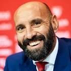

|  | Monchi |
| Gender | Male |
| Ethnic | xxxx |
| Job | Sevilla Chief |
| Roma technical director | |
| Desc | xxxx |
Affiliation
| Club as Coach | Sevilla |
| AS Roma [technical director] | |
| xxxx |
2018 01 20 Retrieve
[AS Roma coach Eusebio Di Francesco has insisted that Edin Dzeko still wants to give his all for the club] It’s been too often now that newspapers have spoken about Roma as a club that is looking to change everything. I even read that we’re allegedly selling players without their knowledge. This could not be further from the truth. That we have numerous quality players, that will always attract the interest of top clubs, is not our fault - or a problem. If concrete offers come through, it’ll be my duty as sporting director to weigh them up, just as my offers are assessed when I contact other sporting directors. It was what I did at Sevilla and, fortunately, that yielded decent results. Just as I did then, I’m in a position to make the decisions I feel are right. I can tell you, with 100% certainty, that I’ve made three times more calls about bringing players here to Roma than calls I’ve received.
I want to be clear with you all about one thing: Roma are not going around the world soliciting offers for our players and we certainly do not want to dismantle the playing staff. In fact it’s the opposite, and I say to the fans that our objective is always the same: to improve the squad. A sporting director is always pleased when the names of players he is following do not appear in the papers, but do not thing that we are sleeping on the job
2018 01 22 Retrieve
[Chelsea and Roma have come to an agreement over the transfer of Edin Dzeko and Emerson Palmieri] Whatever will be will be. I work every day to have players suitable to replace our players, my job is always to strengthen my club. If [Dzeko] leaves Roma, we’ll buy another player.
2018 01 24 Retrieve
[Roma sporting director Monchi has rejected reports that his side have agreed a fee with Chelsea over striker Edin Dzeko] Roma, like every club in the world, listen to the offers that arrive for their players, not just for Edin, but anyone in the squad. We are ready to listen and then we decide. Now Dzeko is here and the rest doesn’t matter, which means the offer that arrived is not interesting.
2018 02 02 Retrieve
[Roma snubbed the chance to sign Daley Blind after the Manchester United player was offered to the Italian side] Blind was offered to us three or four days ago, but we decided he was not the right player. Even from an economic point of view, which is important.
2018 02 02b Retrieve
[Monchi reveals why Roma snubbed Daley Blind offer] We talked with Jonathan Silva even before the window opened, in expectation of Emerson leaving. Blind was offered to us three or four days ago, but we decided he was not the right player, even from an economic point of view, which is important.
[Roma were reportedly in danger of losing their highly-rated goalkeeper Alisson as rumours of a late bid from Liverpool spread. However, Monchi denied claims that an offer was made] No, no, Now let me rest for a week before we start talking about the next transfer period.
2018 02 15 Retrieve
[AS Roma were able to push Liverpool in a deal for Mohamed Salah to around €50 million] At the end of the day, we could reach €50m with bonuses, but at that moment we had to sell and that was an important option. The Neymar and Kylian Mbappe transfers changed the market, but at that moment it was necessary that we sell. I still think the price could’ve been better for Salah, but it did give us the possibility of making other moves. When I arrived, the Liverpool offer for Salah was €32m plus €3m in bonuses. In today’s football, players go wherever they want to. The figures are important, because at the end of the day we are a business, but the fans cannot be bought. In my years at Sevilla, people counted the trophies and those are so far missing at Roma.
I understand the fans perfectly well, I know they don’t want to talk about numbers, they just want to win, but that is my job. We have to build a club that doesn’t just win, but does so consistently over time. Fans don’t want promises, they want results. I accept all of that, but ask them for a little faith. It takes time. We’ve got to stay quiet and work harder to find the right path towards what the fans want.
[On Emerson Palmieri] We had started talking with Chelsea about Emerson and then they asked us about Edin. We told them to make an offer and we would consider it. Chelsea never offered what we were asking for, though, and Dzeko didn’t reach an agreement with them either. We were not 100 percent convinced about selling Dzeko, but if he had gone, we would have brought in a replacement. [Olivier] Giroud was a serious option, as was [Michy] Batshuayi.
2018 03 05 Retrieve
[Roma director Monchi mourns Davide Astori’s tragic death] I know the suffering, what you feel, the pain you feel because, unfortunately, I experienced it in person with the unfortunate Antonio Puerta. I wish a lot of courage to his family, his friends and his companions, to Fiorentina and to Italian football. RIP Davide Astori
2018 04 24 Retrieve
[Monchi - Meet the Roma ‘transfer genius’ looking to break Liverpool hearts in Europe again] We go looking for unknown players in places where we know the richer teams won’t go because they don’t think they will find anyone talented enough for them. For the first five months we watch a lot of football but with no particular aim: we’re just accumulating data. Every month we produce an ideal XI for each league. Then in December we start watching players who appeared regularly in different contexts - home, away, international - to build the broadest possible profile.
There is really no secret. We watch a lot of football, we travel a lot, we work hard. And, one imagines, to aid his negotiations with Premier League clubs. England is a good market. It was he who negotiated Mo Salah’s sale to Liverpool last summer - a rare mistake in the market, perhaps?
Nobody takes a ‘great economic results’ banner to a football match. [Asked whether it was more important to buy well or sell well] Neither, the priority is to win trophies
2018 05 02 Retrieve
[Monchi has joined their voices to the chorus of those calling for Video Assistant Referees to be added to the Champions League] We conceded a goal that was offside in the first leg, here we had two penalties not given, one of which was a clear red card. It’s time to raise our voices, not just Roma either, as Juventus suffered the same against Real Madrid. Italian football has to raise its voice, because what we saw tonight was shocking. It’s playing with the hearts of all the fans. I don’t understand why VAR is not used in the most important club competition in the world. I don’t get it. There are still mistakes, but many fewer than we see otherwise. It’s not just damage on an economic level, but also for the passion and hard work. The lads in the locker room were really angry, as we gave 100 per cent in the second half and were excellent. We must introduce VAR in the Champions League, because it’s fundamental. I don’t know why UEFA don’t want it. I really think it’s necessary, because fans might joke that the final with VAR would be Bayern Munich-Roma, but it’s actually true.
2018 05 11 Retrieve
[Cengiz Under, the NxGn wonderkid taking Serie A by storm] He is probably the least well known of our new signings for the fans. When the manager and I started looking for a left-footer who could play on the right, we thought of him right away. He is a footballer with great potential who can also play an important role right away.
2018 05 22 Retrieve
[Monchi warns Liverpool and Real Madrid] Alisson? If he leaves, it’s just because I’ve gone back to being a goalkeeper! This is the only way he’ll leave, but I don’t know if I’m ready to play again.
[On Edin Dzeko] He’ll stay with us. I expect him to have a similar next season to this one. We all want him to stay
2018 06 18 Retrieve
[Roma coach Eusebio Di Francesco has signed a contract extension to keep him with the Serie A club until 2020] The renewal once again demonstrates the great confidence and belief we have always had in our coach. We are all convinced that together we can aim for new heights and achieve our objectives.
2018 06 22 Retrieve
[Justin Kluivert has joined Roma from Ajax in a deal worth an initial €17.25 million] I think that Justin is already one of the most exciting young players in European football. Because of this it was not easy to bring him to Roma ahead of a number of other clubs. But Justin believes Roma is the perfect club for him to continue his development and realise his enormous potential.
2018 06 26 Retrieve
[Javier Pastore has signed a five-year deal at Roma in a €24.7 million move from Paris Saint-Germain] The signing of Javier makes me very happy because we are talking about the sort of player who can excite the fans he plays for. In my career as a sporting director I have signed a lot of players, but Javier might just be the one with the most talent
2018 06 26b Retrieve
[Roma have yet to receive an offer for in-demand goalkeeper Alisson] As of now we’ve had no offers for Alisson. All I think about is waiting for the World Cup to finish, but hopefully for Brazil that’s as late as possible, then he can rest, come here, and train with his team-mates. I want to make it clear: as of now no offer has arrived. If you asked me about [Patrick] Schick I’d say the same thing, I’ve read so much but no offer has come in. That’s the reality, and I have to work with reality.
I met Giampiero Pocetta [Pellegrini’s agent] last week, and we did not talk about his goodbye. We are calm
2018 07 07 Retrieve
[Roma sporting director Monchi insists Alessandro Florenzi has not been issued with an ultimatum as the club attempt to meet the in-demand Italy international’s wage demands] We have not moved forward much. It’s a difficult negotiation because he is a great player. I think that Roma have made a strong offer to him, a very good offer, but I understand that he too has his thoughts and requests. I am confident, but not much has changed in the last few days. There will never be an ultimatum, Alessandro is a son of this club. What will happen will happen, I am fighting every day to get the renewal done and I have faith. But we are still a little apart
[Justin Kluivert, Davide Santon and Javier Pastore headline the other arrivals with sought-after Brazil shot-stopper Alisson appearing increasingly likely to stay] We have not received any offers, so it’s difficult to have an idea about figures if there has not been any offer. Now Alisson will go on holiday and he will join up with the squad after that
2018 07 25 Retrieve
[Roma and their astute sporting director Monchi certainly had every reason to believe that Malcom was set to become their latest signing on Monday afternoon] After that, we were forced to do so too. An hour later, rumours of Barcelona’s interest started doing the rounds.
2018 08 02 Retrieve
[Florenzi signs new long-term Roma contract] I am very pleased with Alessandro’s decision, both of us have always been keen to continue this beautiful story together. For us, Alessandro is not just an important player - but one of our leaders
2018 10 15 Retrieve
[On Cengiz Under] It’s true that Barcelona have an interest in the player. Bayram Tutumlu [Under’s agent] has a strong relationship with Barca and he informed me that there is definitely an interest there. We have not received any offers for the player but it would not surprise me if he was being tracked - he is a young, talented player who is scoring a lot of goals. Our aim is for Cengiz to become a very important player for us because he has youth and all the qualities needed to do that.
2018 11 24 Retrieve
[Roma director of football Monchi says the club are yet to decide how to act over the future of winger Cengiz Under] We haven’t decided anything for Cengiz Under yet. He is very young, he is improving. But this is not the right moment to discuss a new contract and he must continue the growth process. Let’s leave him in peace to mature at his own pace. What needs to come will come in good time.
2019 02 12 Retrieve
[Who is Nicolo Zaniolo?] We were thinking of waiting six months, but he’s already ready to play.
2019 03 08 Retrieve
[Recruitment guru Monchi leaves Roma amid Arsenal & PSG links] I would like to thank president Pallotta, the club’s management, staff, players and fans for their support during my time at the club.
I would like to thank president [James] Pallotta, the club’s management, staff, players and fans for their support during my time at the club
I wish Roma a lot of success in the future
2019 03 16 Retrieve
[Monchi has highlighted as the most important for success] Coordinating with the manager is fundamental and it’s very important to know the club, know what the city and the club have to offer players. And you have to align that with the kind of player the coach wants to manage.
[On Unai Emery] Unai is critical for our model to be successful. He obtains results when we need them, he improves the players and is popular with fans. [He] is capable of bringing a dead man back to life
2019 03 16b Retrieve
[Former Roma technical director Monchi has hinted he could be set to return to Sevilla amid links to Arsenal] The heart never forgets the place where it left its best beats. Just this…which at the same time is a lot. Happy Saturday!
2019 03 17 Retrieve
[Arsenal miss out as Monchi returns ‘home’ to Sevilla] The heart never forgets the place where it left its best beats. Just this…which at the same time is a lot.
2019 03 18 Retrieve
[Monchi reveals why he opted for Sevilla return over Arsenal role] I appreciate the interest of Arsenal, perhaps the one that has shown the most interest, and of other clubs who have made contact. I have evaluated the proposals I had and I have chosen Sevilla. It was the one that brought things together and had the conditions for me
2019 03 18b Retrieve
[Roma president James Pallotta has hit back at former sporting director Monchi for suggesting he left the Italian club because of disagreements between the two] : I left Roma for a simple reason: I realised that the owners’ ideas were different to mine. The president thought it was better to go to the right, I thought it was better to go left.
2019 07 05 Retrieve
[Wissam Ben Yedder continues to be linked with a move away from Sevilla, with the France forward reportedly a target for Manchester United should they sell Romelu Lukaku] There’s nothing new. He has one week left of holiday and will report for pre-season on the 13th [of July] to travel to the United States. From then on, the [transfer] market is open and there are possibilities for any player of our squad. As of today, no offer has arrived.
2019 09 02 Retrieve
[Sevilla sporting director Monchi on Javier Hernandez’s sacrifice] I’ve never seen a player cut his wages the way he has done in order to come here. That’s a sign. He has made an important financial sacrifice to come here, and when I think about that I realize it can only be down to his true desire to play for Sevilla. I think he is among the best strikers in the world. Javier has goals, has quality, he’s fast and he’s a good finisher
2019 12 02 Retrieve
[Hernandez reportedly took a significant pay cut to join Sevilla over the summer, a sacrifice which was not lost on the club’s director of football Monchi] Javier Hernandez will give us a lot because at 31 years old, I see him at the peak of his career. He arrived completely convinced by the project. Rarely have I seen a player who has sacrificed so much to sign for this club. How he has gambled on coming to Sevilla, it’s a huge example of the level the club is now at
2020 01 18 Retrieve
[Sevilla chief Monchi says he would have taken team off after Real Madrid profit from VAR controversy] Everyone saw the action. There’s no footballing, technical or tactical analysis after such a clear incident that defines the game. There’s nothing more to analyse about it. It’s absurd. If they had ruled out the second goal, I would have come down to the pitch and taken the team off. We leave here satisfied with the game despite the defeat because Sevilla are a very big team. We’re angry, outraged, and […] I stop there
2020 04 22 Retrieve
[Monchi says Sevilla have not been in touch with Barcelona over a possible transfer deal for Ivan Rakitic] It is not known what will happen to soccer, therefore we are not going to spend money when we do not know what income we will have. We will not do it yet, neither in purchases nor in renewals. There is no negotiation with Barcelona for Rakitic. I have read Ivan’s wish to return to Sevilla one day. And I thank him for his words and his interest in returning, but right now talking about the market is risky. You can’t say we’re interested in anyone because it’s unrealistic. Sevilla is not making movements for anyone. We have not made movements because we do not know how the pandemic will end. Talking about paying a transfer fee today does not go with the path we are on. I would gain adulation [from the fans] if I say that we are working on bringing in players, but it is not the case
2020 05 25 Retrieve
[Monchi defends Sevilla players after lockdown-breaking party] Those involved have publicly apologised, that’s not easy. Lucas Ocampos, Franco Vazquez, Luuk de Jong and Ever Banega made a thoughtless mistake and they have assumed responsibility for it. For me, the important thing is that they have apologised voluntarily. I think it’s also an example of apologising at a moment in which we’re all making mistakes. All this is new, it has caught us off guard and Sevilla, regarding compliance with the sporting protocols, both from the National Sports Council and La Liga, I think we are being a model club. It’s impossible to get a 10 but I think we are getting a 9.5. The important thing is there was a mistake which they recognised, and above all with the capacity they have had to apologise
[Monchi feels the team are in good shape and ready to get back on the field] We’re satisfied. The amount of work from the beginning is optimal. Little by little we’re coming up to that moment which we’re all waiting for, which is being able to train as a group. I hope this process lasts as little as possible because training collectively is the most real thing. At the end of it all, without friendlies and with the amount of time we were stopped, with the competition being so close, collective training sessions now seem key. We’ve all pushed and fought for football to return. We’re missing something important, which are fans, but the safety and health conditions hinder that and we have to approach it as something which isn’t ideal, but necessary. I think it’s everyone’s triumph. Clearly La Liga have backed it strongly and have led the way for all of us to push too. It’s an achievement and an important step in order to return to normality.